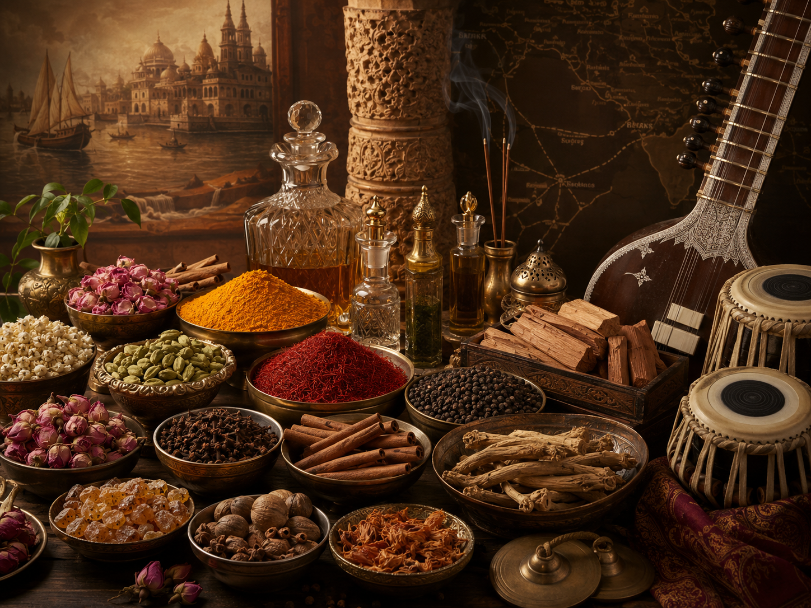

Artigianato
Mani e Processo
I workshop rivelano la disciplina del fare: pressione, ritmo, argilla, tessuto, scrittura e ornamento personale.
Unfiltered India
Una mostra culturale contemporanea che reinterpreta l'India attraverso artigianato, narrazione sensoriale, intelligenza materiale e design immersivo.
Bindi rappresenta identità, intimità e simbolismo culturale.
Brera rappresenta curatela, lusso e valore artistico elevato.
Insieme, creano un ponte tra patrimonio e percezione contemporanea. Il titolo non è intenzionalmente geografico; è un modo di cambiare come la cultura indiana viene vista, vissuta e valorizzata in un contesto di design europeo.
La mostra si allontana dal linguaggio degli eventi decorativi verso un'esperienza editoriale, di alto livello e contemporanea. Il focus è il processo artigianale, la partecipazione raffinata, le storie degli ingredienti, l'atmosfera spaziale e l'intelligenza custodita nei materiali quotidiani.
I visitatori sono invitati a osservare, toccare, scrivere, stampare, vestire, ascoltare e riflettere attraverso incontri progettati piuttosto che esposizioni decorative.
I workshop rivelano la disciplina del fare: pressione, ritmo, argilla, tessuto, scrittura e ornamento personale.

Spezie, botaniche, ingredienti per fragranze e strumenti sono inquadrati come storie di agricoltura, commercio, benessere e performance.
The Womb of OM crea una transizione spaziale attraverso vibrazione, origine, riflessione e narrazione architettonica.
La direzione aggiornata utilizza interpretazione culturale raffinata, ritmo visivo contenuto e partecipazione del visitatore con uno scopo. L'esperienza è ora strutturata intorno all'intelligenza artigianale, alla cultura materiale e alla percezione contemporanea.